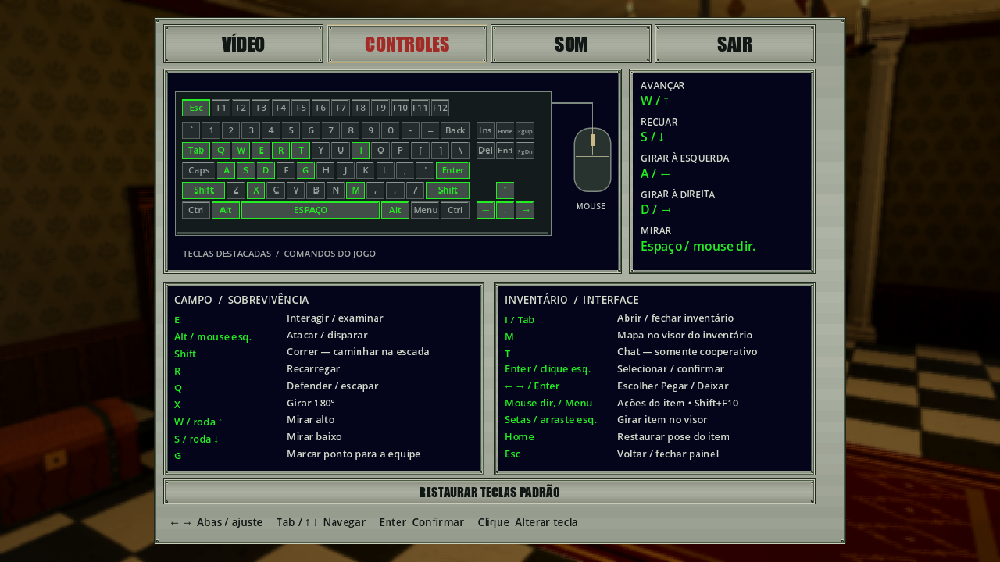
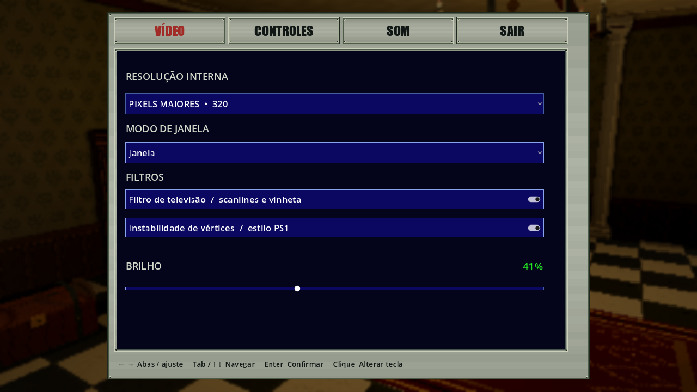
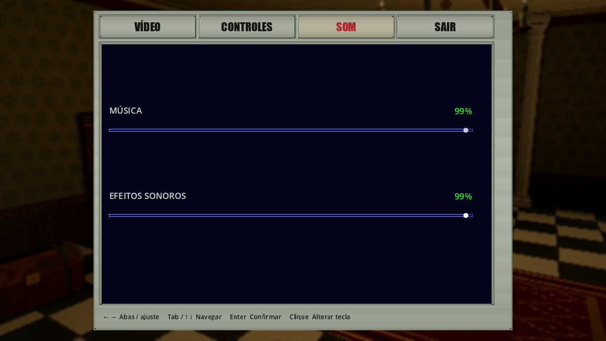
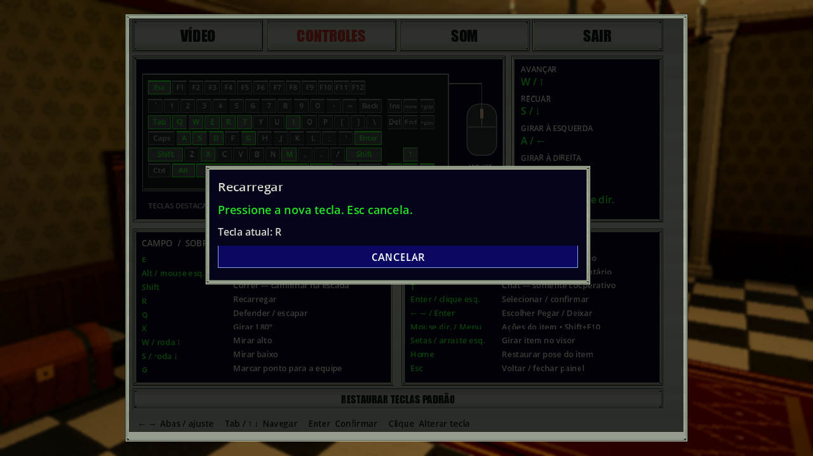

Configurações e controles editáveis · 15/10/2026
Complemento posterior: VÍDEO agora agrupa televisão e instabilidade de vértices sob o título FILTROS. A captura compartilhada abaixo acompanha essa revisão; o relato de remoção dos títulos internos preserva o estado anterior.
Complemento posterior: modo Tela cheia/Janela e etapa 4.1: controle/áudio por foco entre até quatro janelas. O relato abaixo preserva a rodada de controles; o guia atual é Controles.
Estilo atual: azuis do inventário, percentuais/teclado verdes e cenário atrás do inventário/baú. As capturas deste guia acompanham a revisão; os números de checks abaixo preservam suas rodadas.
Atualização posterior nesta data: adicionado RESTAURAR TECLAS PADRÃO com confirmação. As capturas atuais deste guia incluem o botão. A rodada de 314 checks abaixo permanece como registro anterior; as novas evidências estão no relatório da restauração.
Atualiza o primeiro painel metálico, preservando o estilo do inventário e as regras do menu Esc. VÍDEO e SOM contêm apenas os campos; o rótulo é RESOLUÇÃO INTERNA. Removidos os títulos internos, a explicação da resolução e a dica de saída do rodapé.



Esc e SAIR salvam imagem, volumes e teclas e retornam ao menu Esc. Erros de gravação mantêm o painel aberto com aviso. No solo o mundo permanece pausado, com cenário escurecido/desfocado e música abafada. No cooperativo, autoridade, tempo e áudio continuam ativos com cenário apenas escurecido.
Editar teclas
Clique na tecla do desenho ou no campo de um comando. Pressione a nova tecla; o desenho, a tabela e o input do jogo são atualizados ao vivo. Mouse e controle conservam seus vínculos. Se houver duas teclas no comando, escolha qual mudar; se a tecla servir a dois contextos, escolha a ação. Ao clicar numa tecla livre, escolha um comando para atribuí-la como tecla principal.
Conflitos são avisados sem roubar o vínculo de outra ação. Avançar/recuar e altura da mira podem compartilhar teclas porque a mira imobiliza o deslocamento; as teclas de girar continuam exclusivas, pois o giro também funciona ao mirar. Esc cancela a captura/lista; um Esc posterior salva e volta. Atalhos de navegação, seleção e rotação do visor permanecem fixos; Esc fica reservado para retorno.

Imagens originais do Godot em 1280×720; fixtures com inputs sintéticos. O exemplo de edição usa vínculos alterados pela fixture, não novos defaults.
Mira por teclado e roda
Os padrões passam de Page Up/Page Down para W/S, além de roda ↑/↓. Com Espaço ou botão direito segurado, W mira alto e S mira baixo enquanto pressionados. O último sentido da roda mantém a mira alta/baixa até soltar a mira. Fora dela, W/S avançam/recuam e a roda não altera o nível. Sem arma, essas entradas não iniciam mira. Menu, bloqueio de input e saída de sessão descartam o nível guardado pela roda.
Implementação e compatibilidade
SettingsBindings monta a captura e verifica conflitos. KeyboardDiagram
possui áreas clicáveis; ControlGuide continua consultando o InputMap.
Controls.Setup aplica GameOptions.KeyBindings, um campo opcional no arquivo
local de preferências. Arquivos antigos sem o campo continuam válidos;
overrides de ações desconhecidas, teclas inválidas/reservadas ou listas
inválidas são descartados individualmente. Não há migração de campanha:
Core, protocolo, Epoch/Sequence e schemas de save de campanha permanecem iguais.
Também foi removido o envio extra de inputs neutros na criação da pausa.
Enquanto o solo estava parado, esses envios acumulavam frames na fila e
atrasavam comandos ao retomar. App já envia neutro no ciclo normal quando
o menu bloqueia input no cooperativo; a pausa solo impede o avanço do mundo.
Não houve alteração de simulação para compensar o atraso, nem novos SFX,
assets 3D, câmeras, tetos ou regras de autoridade.
Evidências e limites
Passaram 314 checks renderizados, 85 CoreTests, 16 checks Python,
build C# sem avisos/erros e importação Godot. Renders solo/host/cliente e
4:3/16:9 foram conferidos visualmente. O mixer mantém a pausa/abafamento
somente no solo. A rodada final está em Build/settings-controls-complete.log;
demais gates em settings-controls-core.log, settings-controls-python.log,
settings-controls-build.log e settings-controls-import-final.log.
Também passou o smoke ENet real com servidor dedicado e quatro clientes:
Jill chegou ao jantar, Chris à galeria leste e Wesker à varanda; Rebecca
permaneceu no hall conforme o roteiro. Todos receberam snapshots, viram os
quatro conectados e tiveram inputs reconhecidos. Logs sem erros de envio ou
aviso de MTU; Build/smoke/67bfe0eef819/ e Build/settings-controls-smoke.log.
Isso comprova os critérios locais do smoke, sem validar Internet ou a matriz
inteira de concorrência/reconexão/restore. Rede e saves de campanha não mudaram.
Portal MkDocs strict, mídias/proveniência e 69 páginas HTML com seus links locais passaram. Acervo: 357 registros, 164,12 MiB de um limite de 200 MiB.
Base local e059383 com alterações não commitadas preexistentes preservadas;
não representa release ou SHA final de capturas. Cena
Tools/PauseMenuAcceptance.tscn, argumentos --settings-suite --binding-suite.
Saídas em Build/settings-controls-2026-10-15/ e logs
Build/settings-controls-*.log.
A fixture executa App real com solo, host com outro cliente e App cliente de servidor dedicado ENet em localhost. Verifica edição por ambos os caminhos, conflitos/cancelamento, vínculo secundário, tecla compartilhada, reload dos vínculos salvos, Esc/SAIR e compatibilidade com preferências antigas/inválidas. W/S, roda, retorno ao nível neutro, movimento remapeado e personagem desarmado são conferidos na autoridade. Os checks remotos aguardam o estado confirmado, sem inferir comportamento a partir de um frame ou medir latência.
As capturas públicas anteriores do painel ficam em
media/history/pre-bindings-2026-10-15/, com proveniência preservada. As novas
imagens e o acervo são regenerados por Tools/build_public_galleries.py --refresh-settings.
Controles físicos, audição crítica, campanha completa, Internet, exports e profiling permanecem sem validação nesta rodada. Testes dirigidos locais não equivalem à homologação geral do multiplayer.